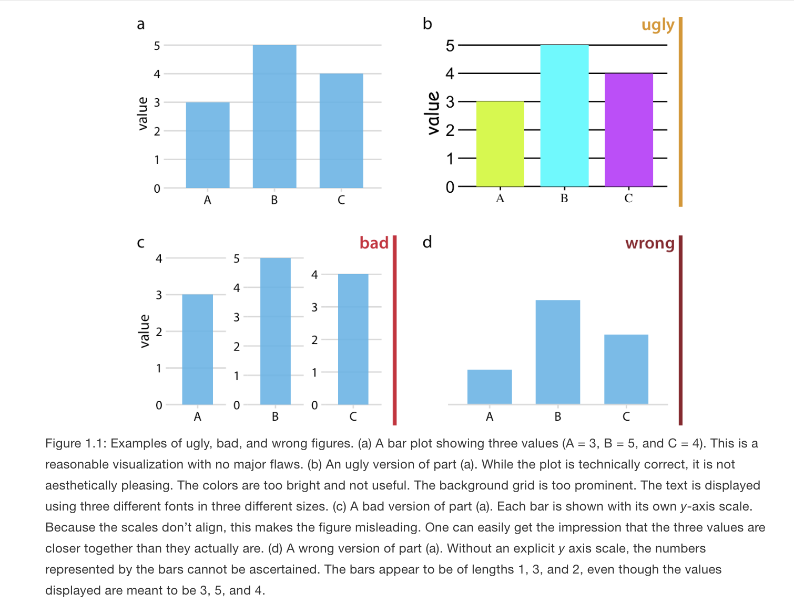

load("status.RData")4 Visualization
In this section, we discuss a set of tools for data visualization in R.
Goals of data visualization
- Communicate information
- Transparently (show me the data!)
- Quickly
- Simply
- Accurately
- And with a little work: beautifully
There are many resources for ideas and best practices for data visualization. See here and here.
We will cover many types of visuals, each typically designed for a different purpose.
What to communicate?
- Data summary
- Central tendency (e.g., mean, median)
- Spread (e.g., standard deviation, IQR)
- Comparison
- e.g., Callback rates for black vs. white sounding names
- Trend
- e.g., Economic confidence over time
- Relationship
- e.g., Correlation
4.1 Application: Social Status and Economic Views
We are going to explore different types of visualizations through different social science examples. The first application we visit is a survey experiment.
Thal, A. (2020). The desire for social status and economic conservatism among affluent Americans. American Political Science Review, 114(2), 426-442.
In the experiment, affluent Americans are randomly assigned to encounter Facebook posts in which others broadcast their economic success. These posts are designed in a way that encourages affluent respondents to view economic success as a means of achieving social status.
Causal claims
- “I expect that exposure to these posts will cause affluent Americans to become more supportive of conservative economic policies.”
- “I also expect that exposure to these posts will cause especially large increases in economic conservatism among affluent men.”
The experiment includes a sample of 2010 affluent Americans– people who report household incomes in the top 10 percent of the U.S. income distribution.
Experiment Ingredients:
- Causal Question: Does desire for social status influence economic views of affluent Americans?
- Recruitment: Ask affluent Americans to take a survey online
- Randomization: Randomly assign respondents to view different fictional Facebook posts designed to signal different motivations
- Outcome: an index based on respondents’ support for decreasing “taxes on households making $150,000 or more a year,” support for decreasing the “taxes on money people make from selling investments, also referred to as capital gains,” and support for decreasing “government regulation of business and industry.”
- Comparison: Average economic views between experimental conditions.
Snapshot of status conditions

Snapshot of Concrete and Placebo comparison conditions

Can you put this into the potential outcomes framework?
4.2 Boxplots
For a video explainer of the code for boxplots and barplots, see below. The video only discusses the code. Use the notes and lecture discussion for additional context. (Via youtube, you can speed up the playback to 1.5 or 2x speed.)
Let’s load the data! Here, note that the data file is in a .RData format instead of .csv. This means that instead of using read.csv, we should use a function to load the data that is suitable for the .RData format. This will be load. That function works the following way:
After running the above code, an object will show up in your R environment.
head(status) condition male econcon
2 Concrete 1 0.7500000
3 Self-Esteem 1 1.0000000
4 Placebo 1 0.6666667
5 Self-Esteem 0 0.2500000
6 Self-Esteem 0 1.0000000
7 Social Approval 0 0.8333333The data include the following variables
condition: Placebo, Concrete, Self-Esteem, Social Approval, Conspicuous Consumptiongender: 1= male; 0= otherwiseeconcon: Economic views. Numeric variable from 0 to 1, with higher values reflecting more conservative views
4.2.1 Data Summary: Boxplot
Characterize the distributions of continuous numeric variables at once
- Features: box, whiskers, outliers
- We will supply the function with a column in our data, and the boxplot displays the distribution of that variable.
Figure from Will Lowe
Here is an example of the boxplot using our econcon variable.
- We have added a title and y-axis label to the plot through the
mainandylabarguments. Play around with changing the words in those arguments.
boxplot(status$econcon,
main="Economic Views in the Survey Sample",
ylab="Economic Views")After you execute the plot code, a preview of the plot should appear in the bottom-right window of RStudio.
Boxplots are also useful for data summary across multiple distribution: boxplot(y ~ x, data = d)
boxplot(econcon ~ condition, data=status,
main="Economic Views by Experimental Condition",
ylab="Economic Views",
names = c("Placebo", "Concrete", "Conspicuous",
"Self-Esteem", "Social"),
xlab = "Experimental Condition",
col = c("red3", rep("dodgerblue", 4)))
The additional arguments are just aesthetics. Play around with different settings.
- For example, can you change the code to make the first two boxes red? Colors are supplied as a vector using the
col =argument.- To explore colors in R, run this function
colors()in your R console.
- To explore colors in R, run this function
How should we interpret these results? Does status or social approval motivation, specifically, influence economic views? What about other potential motivations?
4.3 Barplots
Comparing frequencies (raw N), proportions, and/or means across categories

We will use the barplot() function.
- In contrast to the boxplot, the barplot function takes a vector of values that will serve as the top of the bars in the plot– it does not summarize a variable from within the function
- E.g., we could supply it a set of means to plot, not a raw variable
- Many of the other arguments are aesthetics similar to those when working with boxplot.
- This means that barplots are pretty easy to create in R. We can supply it a short vector of any values (e.g.,
valuesbar <- c(20, 30, 40, 10)), and we could also supply it a vector of any names to label those values.
## Example
valuesbar <- c(20, 30, 40, 10)
namesbar <- c("Livingston Dining \n Commons",
"Neilson \n Dining Hall",
"Busch \n Dining Hall",
"Brower \n Commons")
barplot(valuesbar,
names=namesbar,
cex.names = .6,
main="Hypothetical Evaluation of RU Dining",
ylab="Percent Prefer Dining Option",
cex.lab = .7,
col="red3")- For real applications, this means we could supply a barplot with the output of a `tapply()` function, a `table()` summarizing a single variable, or a set of `mean()` values we have combined into a vector using `c()`.For example, in experiments, we may use barplots to compare the mean from the treatment group(s) \(\bar{Y}(1)\) to the control \(\bar{Y}(0)\) on some outcome. Let’s do it!
- First, we need the means. Let’s find the conditional means of economic views.
condmeans <- tapply(status$econcon, status$condition, mean)
condmeans # save as object to supply to the barplot function Placebo Concrete Conspicuous Consumption
0.6340948 0.6647485 0.6724065
Self-Esteem Social Approval
0.6564103 0.6904444 The first input is the vector of means/proportions/frequency you want to plot.
barplot(condmeans,
ylim = c(0,1), # y-axis dimensions
names = c("Placebo", "Concrete", "Conspicuous",
"Self-Esteem", "Social"),
col = "black", # color of bars
main = "Mean Economic Views by Condition", # plot title
cex.main = .8, # size of plot title
cex.names = .8, # size of name labels
ylab = "Mean Views", # yaxis label
cex.lab = .8,# size of yaxis label
las = 1) # controls angle of axis labels
The remaining arguments alter the look of the plot to make it more informative.
- How could we improve this plot to make the interpretation easier?
4.3.1 Saving Plots
You can save an image of your plot as a png() to your working directory. Place png() just before your plot with a name in quotations, and then specify the dimensions. Place dev.off() at the bottom.
png("mybarplot.png", width = 7, height = 4, res=300, units="in")
barplot(condmeans,
ylim = c(0,1), # y-axis dimensions
names = c("Placebo", "Concrete", "Conspicuous",
"Self-Esteem", "Social"),
col = "black", # color of bars
main = "Mean Economic Views by Condition", # plot title
cex.main = .8, # size of plot title
cex.names = .8, # size of name labels
ylab = "Mean Views", # yaxis label
cex.lab = .8,# size of yaxis label
las = 1) # controls angle of axis labels
dev.off()Alternatively, you can save it as an image, by going to the plot window in your RStudio environment, and clicking on Export -> Save as Image. Here, you can save it in any file format you would like, as well as change the dimensions.
4.3.2 Creating New Variables
The author theorizes that social approval, self-esteem, and conspicuous consumption are all elements of “status motivation.” We could analyze the results by collapsing them into a single category called “status motivation” and compare it to the other experimental groups.
- Create a new variable
conditionnew - Code the variable into new categories based on the values in the original
conditionvariable - Check the class of the new variable and convert if necessary
- Verify new variable by exploring values
status$conditionnew <- NA # create new variable
## Code new variable
status$conditionnew[status$condition == "Placebo"] <- "Placebo"
status$conditionnew[status$condition == "Concrete"] <- "Concrete"
status$conditionnew[status$condition == "Conspicuous Consumption" |
status$condition == "Self-Esteem" |
status$condition == "Social Approval"] <- "Status"
# class(status$conditionnew) check the class
status$conditionnew <- as.factor(status$conditionnew) # convertRecall, an alternative way to create the new variable is through an ifelse statement.
- Can be read: If this relational statement is
TRUE, I assign you A, otherwise I assign you B - This often works best when we change factor variables to character
status$conditionnew2 <- as.character(status$condition)
status$conditionnew2 <- ifelse(status$condition == "Conspicuous Consumption" |
status$condition == "Self-Esteem" |
status$condition == "Social Approval",
"Status", status$conditionnew2)
status$conditionnew2 <- as.factor(status$conditionnew2)
table(status$conditionnew2)
Concrete Placebo Status
391 394 1157 Note: Barplots don’t have to display means. We could also display frequencies. For example, let’s make a plot of the number of people in each condition using our new variable.
freqobs <- table(status$conditionnew)
barplot(freqobs,
ylim = c(0, 1200),
col = "black", # color of bars
main = "Number of People per Condition", # plot title
cex.main = .8, # size of plot title
cex.names = .8, # size of name labels
ylab = "N of Observations", # yaxis label
cex.lab = .8,# size of yaxis label
las = 1) # controls angle of axis labels4.4 Application: Changing Minds on Gay Marriage
We now turn to a study that asks the question
- Research Question Can we effectively persuade people to change their minds?
- Contact Hypothesis: outgroup hostility diminishes through extended positive contact
The authors conduct two randomized control trials in Los Angeles
- Target population: voters in Los Angeles
- Recruitment: select people from a registered voter list
- Randomized treatment conditions:
- Canvassers have a conversation about same-sex marriage vs.
- Recycling scripts (placebo)
- Control group: no canvassing
- Outcome measures:
- Feeling towards gay couples (survey responses over multiple waves)
- Comparison
- Compare average change in feelings between treatment conditions
Let’s load the data. Data available through QSS. See QSS Chapter 2 for additional discussion.
study: Which study is the data from (1= Study1,2= Study2)treatment: Five possible treatment assignment optionstherm1: Survey thermometer rating of feeling towards gay couples in waves 1 (0–100) (asked before people were canvassed)therm2: Survey thermometer rating of feeling towards gay couples in waves 2 (0–100) (asked after people were canvassed)
marriage <- read.csv("gayreshaped.csv", stringsAsFactors = T)## How many rows and columns
dim(marriage)[1] 11948 6## How many observations in each treatment group, in each study
table(marriage$treatment, marriage$study)
1 2
No Contact 5238 1203
Recycling Script by Gay Canvasser 1046 0
Recycling Script by Straight Canvasser 1039 0
Same-Sex Marriage Script by Gay Canvasser 1151 1238
Same-Sex Marriage Script by Straight Canvasser 1033 0For a video explainer of the code for the barplot, scatter plot and histogram created with this application, see below. The video only discusses the code. Use the notes and lecture discussion for additional context. (Via youtube, you can speed up the playback to 1.5 or 2x speed.)
Let’s focus on study 1 only.
marriage1 <- subset(marriage, study == 1)We have to do some work to prepare our outcome and treatment conditions.
In experiments, we compare the mean from the treatment group(s) \(\bar{Y}(1)\) to the control \(\bar{Y}(0)\) on some outcome
- Here are outcome is Change in Support for gay couples: Wave 2 - Wave 1 feeling thermometer scores
marriage1$outcome <- marriage1$therm2 - marriage1$therm14.4.1 Recall: Creating new variables
Let’s create a new variable treatmentnew that collapses the two Recycling and Same-Sex marriage conditions.
marriage1$treatmentnew <- NA
marriage1$treatmentnew[marriage1$treatment == "No Contact"] <- "No Contact"
marriage1$treatmentnew[marriage1$treatment == "Recycling Script by Gay Canvasser" |
marriage1$treatment ==
"Recycling Script by Straight Canvasser"] <- "Recycling"
marriage1$treatmentnew[marriage1$treatment == "Same-Sex Marriage Script by Gay Canvasser" |
marriage1$treatment ==
"Same-Sex Marriage Script by Straight Canvasser"] <- "Marriage"
marriage1$treatmentnew <- as.factor(marriage1$treatmentnew)
table(marriage1$treatmentnew)
Marriage No Contact Recycling
2184 5238 2085 4.4.2 Recall: Using ifelse to create new variable
An alternative way we could create a variable is to use ifelse
Let’s try another way using the ifelse command.
- Can be read: If this relational statement is
TRUE, I assign you A (in this case “No Contact”), otherwise (ifelse()) - if this alternative relational statement is
TRUE, I assign you B (in this case “Recycling”), otherwise (ifelse()) - if this alternative relational statement is
TRUE, I assign you C (in this case “Marriage”), otherwise - If all of those were
FALSEI assign you D (in this case anNA)
marriage1$treatmentnew2 <- ifelse(marriage1$treatment == "No Contact", "No Contact",
ifelse(marriage1$treatment ==
"Recycling Script by Gay Canvasser" |
marriage1$treatment ==
"Recycling Script by Straight Canvasser",
"Recycling",
ifelse(marriage1$treatment ==
"Same-Sex Marriage Script by Gay Canvasser" |
marriage1$treatment ==
"Same-Sex Marriage Script by Straight Canvasser",
"Marriage",
NA)))
marriage1$treatmentnew2 <- as.factor(marriage1$treatmentnew2)4.4.3 Calculating the Average Treatment Effect
We now have our outcome and our treatment conditions. In an experiment, we want to look at the difference in means between conditions. Let’s calculate the means.
outs <- tapply(marriage1$outcome, marriage1$treatmentnew, mean, na.rm=T)Note: Sometimes data include missing cells. In R, these have an NA. To ignore these when calculating a mean, we add na.rm = T to the mean() or tapply() functions.
4.4.4 Visualize means in a barplot
Let’s also add a line at 0 using abline()
barplot(outs,
col="black",
ylim = c(-2, 2), # y-axis dimensions
border = NA, # removes bar borders
main = "Change in FT W2-W1 by Type of Treatment", # plot title
cex.main = .8, # size of plot title
ylab = "Mean Change in FT W2-W1", # yaxis label
cex.lab = .8,# size of yaxis label
las = 1) # controls angle of axis labels
abline(h=0, lty=2, col = "red", lwd=2) # adds horizontal line at 0 with dashes How should we interpret these results?
- In the Marriage condition, it looks like on average, views toward gay couples became warmer (the bar is positive) after the conversations with canvassers about same-sex marriage.
- In contrast, the views of people in the Recycling or No Contact conditions did not change much and if anything, became slightly colder.
- Comparing between these bars, then, it seems like there is an “average treatment effect” given that the change in the Marriage condition was different from the Recycling an No Contact control groups.
4.5 Scatterplots
It turns out that study was completely fabricated, and the article was eventually retracted.
How did people know? Well a team of researchers became suspicious based on exploratory analyses they conducted with the data. Let’s do a few of these to learn about scatterplots and histograms.
Scatter plots show the relationship between two numeric variables.
A common way to describe and quantify a relationship is through correlation.
- Correlation: When \(x\) changes, \(y\) also changes by a fixed proportion
- Asks: If you are a certain degree above the mean of \(x\), are you similarly that much above the mean of \(y\)?
- Positive correlation: data cloud slopes up;
- Negative correlation: data cloud slopes down;
- High positive or negative correlation: data cluster tightly around a sloped line
- Not affected by changes of scale: cm vs. inch, etc.
Range of Correlation is between \(-1\) and \(1\)
- Look at the graphs below for examples of high and low positive and negative correlations.
The plot() function in R works using x and y coordinates.
- We have to tell R precisely at which x- and y- coordinates to place points (e.g., place a point at
x=20andy=40) - In practice, we will generally supply R with a vector of x-coordindates and a vector of corresponding y-coordinates.
To illustrate a scatterplot, we will examine the relationship between the Wave 1 and Wave 2 feeling thermometer scores in the field experiment, for just the control “No Contact” condition.
## Subset data to look at control only
controlonly <- subset(marriage1, treatment == "No Contact")In the plot(), we supply the x and y vectors.
xlimandylimspecify the range of the x and y axis.pchis the point type. You can play around with that number to view different plot types
plot(x=controlonly$therm1, y=controlonly$therm2,
main = "Relationship between W1 and W2",
xlab = "Wave 1", xlim = c(0, 100),
ylab = "Wave 2", ylim = c(0, 100),
pch = 20)The correlation looks extremely high! It is positively sloped and tightly clustered.
In fact, if we use R’s function to quantify a correlation between two variables, we will see it is a correlation above .99, very close to the maximum value.
- By default, R calculate the “pearson” correlation coefficient, a number that will be between -1 and 1. It represents the strength of the linear association between two variables.
## use = "pairwise" means to use all observations where neither variable has missing NA data
cor(marriage1$therm1, marriage1$therm2, use = "pairwise")[1] 0.995313This high correlation was unusual for this type of data.
- Feeling thermometers suffer from low reliability. How a person answers the question at one point in time (perhaps 83) in Wave 1 often differs from the numbers they say when asked again at a future point in time in Wave 2. A person’s responses often aren’t that stable.
- Because there was such a high correlation, it suggested that the data might not have been generated by real human responses
4.6 Histograms
The researchers later discovered the Wave 1 data was suspiciously correlated with an existing survey: 2012 CCAP.
- They believe the researcher likely used CCAP for Wave 1 - used survey responses from real humans that took a real survey – but not the humans that the researcher claimed to interview in the experiment.
- Then the researcher generated the Wave 2 data by adding random noise to the Wave 1 data
- Part of why they believe this has to do with a histogram plot they generated to compare Waves 1 and 2
A histogram is a useful plot for summarizing the distribution of a single variable.
- It shows the frequency of observations (e.g., the number of survey respondents) who give an answer within a particular interval of numeric values
Because a histogram is a single variable summary, we just supply R with the numeric variable we want to summarize.
- The new argument here
breakstells R how many of the individual rectangles we want. You can play around with that number to see how the plot changes.
hist(x=controlonly$therm1, breaks=50,
main = "W1 Histogram", ylim = c(0,1000))hist(x=controlonly$therm2,breaks=50,
main = "W2 Histogram", ylim = c(0,1000)) The researchers noticed that the heaping patterns were different between Wave 1 and Wave 2.
- When real humans answer these types of feeling thermometer questions, we often see heaping (tall spikes) at values of 0, 50, and 100. Humans tend to gravitate toward those nice round numbers to anchor their responses. In addition, often researchers might recode people with missing responses (people who skip a question), as having a score of 50, increasing the number at that point.
- Wave 1 has a lot of this heaping– look at the higher bars around 0, 50, and 100, suggesting a lot of survey respondents gave those answers.
- However, Wave 2 has less heaping, particularly at 50. This suggested to the researchers that the Wave 2 data were likely generated by a computer and not real humans
4.6.1 Happy research ending
While the original article was retracted
- Researchers who found irregularities received funding to conduct similar studies with real data this time
- Multiple publications suggest the canvassing approach was effective:
- Broockman and Kalla. 2016. “Durably reducing transphobia: A field experiment on door-to-door canvassing” Science 352 no. 6282.
- Broockman and Kalla. 2020. “Reducing exclusionary attitudes through interpersonal conversation: evidence from three field experiments.” American Political Science Review
- Kalla and Broockman. 2021. “Which narrative strategies durably reduce prejudice? Evidence from field and survey experiments supporting the efficacy of perspective-getting.” American Journal of Political Science. Forthcoming.
4.7 Line Plots
In this application, we will create a line plot in R. Line plots are built very similarly to scatterplots. We provide R an input of values for the x-axis and corresponding values on the y-axis.
For example, if we wanted to plot the US life expectancy for the past few years from 2018-2023 from , we could do the following based on data from the National Center for Health Statistics https://www.cdc.gov/nchs/fastats/life-expectancy.htm:
years <- c(2018, 2019, 2020, 2021, 2022, 2023)
yvalues <- c(78.7, 78.8, 77, 76.4, 77.5, 78.4)
## Key to making this a line plot is type="l"
plot(x=years,
y=yvalues,
type="l",
main="US Life Expectancy by year",
xlab = "Year",
ylab = "Life Expectancy at birth",
las=2 ) # orientation of axis labels
## Alternate approach is to customize axis
plot(x=1:6,
y=yvalues,
type="l",
main="US Life Expectancy by year",
xlab = "Year",
ylab = "Life Expectancy at birth",
las=2, # orientation of axis labels
xaxt="n") # remove original axis
axis(1, at=1:6, labels = years) # label points only at relevant ticksThe two vectors of values may come from variables in your data or may come from calculations you make using those variables.
Let’s do a more complex example and break this down step by step.
4.8 Application: Trends during COVID
Since the onset of the pandemic in 2020, researchers have evaluated attitudinal and behavioral responses to policy changes, political messages, and COVID case/hospitalization/death rates.
- Survey data on attitudes and self-reported behavior
- Health care provider administrative data
- Mobile phone data to track locations
- Social media data to track attitudes and mobility
Example: Using Survey data from over 1.1 million responses to measure concern about the coronavirus over time.
- Clinton, Joshua, et al. “Partisan pandemic: How partisanship and public health concerns affect individuals’ social mobility during COVID-19.” Science advances 7.2 (2021): eabd7204.
Example: Using the geotracking data of 15 million smartphones per day to compute percentage reduction in general movement and visiting non-essential services relative to before COVID-19 (before March 9).
- Gollwitzer, Anton, et al. “Partisan differences in physical distancing are linked to health outcomes during the COVID-19 pandemic.” Nature human behaviour 4.11 (2020): 1186-1197.

Example: Using Twitter geolocation data to track how much movement users have by looking at the distances from all locations where a given user has tweeted.
- Paiheng Xu, Mark Dredze, David A Broniatowski. “The Twitter Social Mobility Index: Measuring Social Distancing Practices from Geolocated Tweets.” Journal of Medical Internet Research (JMIR), 2020.

We will use the Twitter social mobility index to study how the movement of geo-located Twitter users changed from 2019 into April 2022.
- We will compare this movement for users located in the Northeast vs. South
Each row of the dataset represents a week of the year. Each column represents a particular geography for which social mobility was calculated by the researchers.
Datesindicates the dateNortheast: social mobility data for those in the northeast of the U.S.South: social mobility data for those in the south of the U.S.
## Load the data from the author Mark Dredze's website
covid <- read.csv("https://raw.githubusercontent.com/mdredze/covid19_social_mobility.github.io/master/data/longitudinal_compiled.csv")Just like we have encountered numeric, factor, and character variables, R also has the ability to treat variables specifically as dates. We will want R to treat the date variable we read in as a date, and not as raw text or some other variable type. To do this, we will use the as.Date function.
## Date variable original format and class
range(covid$Dates)[1] "2019-01-01" "2022-12-26"head(covid$Dates)[1] "2019-01-01" "2019-01-07" "2019-01-14" "2019-01-21" "2019-01-28"
[6] "2019-02-04"class(covid$Dates)[1] "character"## Convert to class Date
covid$Dates <- as.Date(covid$Date)
head(covid$Dates)[1] "2019-01-01" "2019-01-07" "2019-01-14" "2019-01-21" "2019-01-28"
[6] "2019-02-04"class(covid$Dates)[1] "Date"The researchers continue to add to these data. Let’s look at the portion of data from 2019 to April 2022.
- Note the use of
as.Dateagain to make sure R knows our text should be treated as a date - Note the use of the greater than or equal to
>=and less than or equal signs<=to specify which rows we want to keep in the data. We want rows that are in dates after January 1, 2019 and (&) on or before April 25, 2022.
covidsub <- subset(covid, Dates >= as.Date("2019-01-01") &
Dates <= as.Date("2022-04-25"))These data are collected by week. That is very detailed. While that may be useful, let us create another variable that contains just the month and year, which will allow us to calculate the average per month. With a date variable, we can use the format function to change the format to just year and month.
covidsub$monthyear <- format(covidsub$Dates, "%Y-%m")
range(covidsub$monthyear)[1] "2019-01" "2022-04"Where we are going …
Starting from basics …
- Let’s first create a scatterplot by providing R with our two variables
- In a trend/line plot, we want each month on the x-axis
- We want our outcome on the y-axis, in this case, average social mobility by month
- Ultimately we will want to compare the Northeast with the South. We will plot one line at a time, starting with the Northeast
We first need to find the average by month. Recall our tapply() function.
mobilitybymonthNE <- tapply(covidsub$Northeast, covidsub$monthyear, mean,
na.rm=T)
mobilitybymonthSO <- tapply(covidsub$South, covidsub$monthyear, mean,
na.rm=T)Let’s look at the output for the Northeast. Each value is what we ultimately want on the y-axis– the average social mobility in a given month.
mobilitybymonthNE 2019-01 2019-02 2019-03 2019-04 2019-05 2019-06 2019-07 2019-08
51.22066 52.26420 63.20130 61.38417 61.27622 60.49753 58.91779 61.20730
2019-09 2019-10 2019-11 2019-12 2020-01 2020-02 2020-03 2020-04
54.44546 54.93814 56.59830 55.44538 51.12414 45.80660 34.55917 18.15076
2020-05 2020-06 2020-07 2020-08 2020-09 2020-10 2020-11 2020-12
23.29190 28.71901 27.02149 32.73828 29.07536 32.07877 29.83641 30.56208
2021-01 2021-02 2021-03 2021-04 2021-05 2021-06 2021-07 2021-08
28.75507 28.76227 35.35340 45.02537 48.19897 50.18401 52.96105 51.19241
2021-09 2021-10 2021-11 2021-12 2022-01 2022-02 2022-03 2022-04
45.81695 49.15654 48.69051 51.24941 46.96813 53.55241 59.70933 54.04312 We want to plot them each at their own point on the x-axis, from the first month to the last month. We can start by creating a vector of the same length as we have months:
1:length(mobilitybymonthNE) [1] 1 2 3 4 5 6 7 8 9 10 11 12 13 14 15 16 17 18 19 20 21 22 23 24 25
[26] 26 27 28 29 30 31 32 33 34 35 36 37 38 39 40These become our two inputs in the plot.
plot(x=1:length(mobilitybymonthNE),
y=mobilitybymonthNE, pch=16) # pch is point typeWe now transform it to a line by specifying type="l"
- By default, R creates a plot with
type=pfor points. R also hastype=bwhich has both a line and points.
plot(x=1:length(mobilitybymonthNE),
y=mobilitybymonthNE, type="l") # makes it a lineLet us change the aesthetics a bit by adding labels and removing the border with bty="n".
plot(x=1:length(mobilitybymonthNE),
y=mobilitybymonthNE,
type="l",
main="Social Mobility by Month and Region",
ylab="Twitter Social Mobility Index",
xlab="",
ylim = c(0, 80), # y-axis limits
las=1, # orientation of axis labels
lwd=2, # line width
bty="n") # removes borderLet’s add a comparison line with the lines() function to look at trends for the south.
- Note that this is outside of the
plot()function, but the inputs are very similar. We supply a set of x and y coordindates.
plot(x=1:length(mobilitybymonthNE),
y=mobilitybymonthNE,
type="l",
main="Social Mobility by Month and Region",
ylab="Twitter Social Mobility Index",
xlab="",
ylim = c(0, 80), # y-axis limits
las=1, # orientation of axis labels
lwd=2, # line width
bty="n") # removes border
## Add line to the plot
lines(x=1:length(mobilitybymonthSO),
y=mobilitybymonthSO, col="red3", lwd=2)Let’s create our own axis for the plot to add detail. To do this, we add xaxt to the plot function and then use axis() below the function.
The labels we will add are the actual months in the data. These happen to be the labels or names of our vectors:
names(mobilitybymonthNE) [1] "2019-01" "2019-02" "2019-03" "2019-04" "2019-05" "2019-06" "2019-07"
[8] "2019-08" "2019-09" "2019-10" "2019-11" "2019-12" "2020-01" "2020-02"
[15] "2020-03" "2020-04" "2020-05" "2020-06" "2020-07" "2020-08" "2020-09"
[22] "2020-10" "2020-11" "2020-12" "2021-01" "2021-02" "2021-03" "2021-04"
[29] "2021-05" "2021-06" "2021-07" "2021-08" "2021-09" "2021-10" "2021-11"
[36] "2021-12" "2022-01" "2022-02" "2022-03" "2022-04"plot(x=1:length(mobilitybymonthNE),
y=mobilitybymonthNE,
type="l",
main="Social Mobility by Month and Region",
ylab="Twitter Social Mobility Index",
xlab="",
ylim = c(0, 80),
las=1,
lwd=2,
bty="n",
xaxt="n") # removes original x-axis
## Add line to the plot
lines(x=1:length(mobilitybymonthSO),
y=mobilitybymonthSO, col="red3", lwd=2)
## add the axis the "1" means x-axis. A "2" would create a y-axis
axis(1, at = 1:length(mobilitybymonthNE),
labels=names(mobilitybymonthNE), las=2)Finally, let’s add a legend(). Now we’re here!
plot(x=1:length(mobilitybymonthNE),
y=mobilitybymonthNE,
type="l",
main="Social Mobility by Month and Region",
ylab="Twitter Social Mobility Index",
xlab="",
ylim = c(0, 80),
las=1,
lwd=2,
bty="n",
xaxt="n") # removes original x-axis
## Add line to the plot
lines(x=1:length(mobilitybymonthSO),
y=mobilitybymonthSO, col="red3", lwd=2)
## add the axis the "1" means x-axis. A "2" would create a y-axis
axis(1, at = 1:length(mobilitybymonthNE),
labels=names(mobilitybymonthNE), las=2)
## Add legend, "bottomleft" indicates where on the plot to locate it
## Could use "topright" instead, for example
legend("bottomleft", col=c("red3", "black"),
c("South", "Northeast"),
cex = .7, # size of legend
lwd=2,
bty="n")4.9 Visual tips and tricks
Recall we said the goals of visualization are to communicate information
- Transparently (show me the data!)
- Quickly
- Simply
- Accurately
- And with a little work: beautifully
What NOT to communicate?
Claus Wilke provides an overview of rules of thumb to fall when creating a data visualization on the Serial Mentor website.
An example is below

Overall, the best thing to do is to look at your visual from a consumer’s point of view. You want your visuals to be intuitive enough for a viewer to be able to interpret it without too much help from you or explanatory text elsewhere in a paper or presentation. Our goal is to help consumers of our data understand the main takeaways of our research easily and accurately.
- We want to make sure our visuals always have informative labels that a lay person can understand (instead of technical variable names, we can use plain language)
- We may need to add a legend or additional text to a visual to help with this
- We want to choose colors to convey information. We want to avoid colors that are hard to see or might distract consumers.
- The axis dimensions should not be misleading. If the goal is to compare two or more plots to each other, we would want them to have similar axes, for example.
4.10 Common R plotting functions and arguments
Here is a refresher of several of the functions and arguments we have come across.
Create a plot
plot(): for scatterplots and trend plotsbarplot(): for barplot comparisons across categoriesboxplot(): boxplot for summaries of numeric variableshist(): for histogram summaries of a single numeric variable
Aesthetic arguments within a plot
main =: Specifies the main title of the plot. Supply text (e.g.,main = "my title")ylab =: Specifies the title of the y-axis. Supply text (e.g.,ylab = "Mean of variable")xlab =: Specifies the title of the x-axis. Supply text (e.g.,xlab = "X variable name")ylim =: Specifies the range of the y-axis. Supply vector of two numbers (e.g.,ylim = c(0, 100))xlim =: Specifies the range of the x-axis. Supply vector of two numbers (e.g.,xlim = c(0, 100))bty="n": Removes the border box around the plotcex,cex.main,cex.names,cex.lab,cex.axis: Changes the size of different elements of a plot. Default is 1, so a value of .8 would be smaller than default, and 1.2 would be bigger than normal.type =: Specifies the type of plot (e.g.,type="l"is a line plot,type="b"is a plot with points and lines connecting them)lwd=: Specifies the width of a line on a plot. Default is 1. E.g.,lwd=3makes a line much thickerpch=: Specifies the point type. E.g.,pch=15lty=: Specifies the line type. E.g.,lty=2is a dashed linecol=: Specifies the color of the central element of the plot. Can take a single color or vector of colors. Usecolors()in the console to see all R colors.names: Specifies a set of labels in a barplot
Ways to annotate a plot (generally added below the initial plotting function)
abline(): Adds a line to the plot at a particular point on the x- or y- intercept, either horizontal, vertical, or of a particular slope- Example: Adding a horizontal line at a particular at a y value of 2
abline(h=2) - Example: Adding a vertical line at a particular at a x value of 2
abline(v=2)
- Example: Adding a horizontal line at a particular at a y value of 2
lines(x=, y=): Adds a line connecting pairs of x- and y-coordinates. We used this to add the South line to the social mobility plot.axis(): Used to replace the default x- or y- axis that R will create with a customized axis- To create an original y-axis, use
axis(2, vectorofvalues, labels)and specifyyaxt="n"inside the plotting function to remove the original y-axis. - To create an original x-axis, use
axis(1, vectorofvalues, labels)and specifyxaxt="n"inside the plotting function to remove the original x-axis.
- To create an original y-axis, use
legend(): Adds a legend to a plot. Can specify the location as the first argument (e.g.,"bottomleft"or"topright")text(): Adds text to a plot at specific x- and y- locations. (E.g.,text(x=3, y=4, "Here is a point"). The x and y arguments can be single numbers or a vector of numbers. x and y need to be the same length.points(): Adds points to a plot at specific x- and y- locations. Inputs are much likeplot
4.11 A note on ggplot
R has a number of open-source packages that people can use to expand the set of capabilities for visualization and analysis. These can be installed through RStudio. We will look at one of these packages: ggplot2.
Using ggplot will be extra-credit at this point in the course. We may return to it later in the semester as part of the main curriculum. Reviewing this section of the notes is optional.
The “gg” in ggplot2 stands for the “Grammar of Graphics.” This program provides another framework for creating figures in R. According to Hadley Wickham, “ggplot2 provides beautiful, hassle-free plots that take care of fiddly details like drawing legends.”
Practically speaking, ggplot() is another tool to plot the same types of figures we have been making in class. Some people prefer ggplot2 because they find the logic of building figures more intuitive using this framework and/or more aesthetically pleasing. However, both ggplot() and the plots we have been making in class can accomplish the same ultimate goals of data visualization– to communicate information transparently, quickly, accurately, simply, and beautifully. Which types of plots you may prefer is up to your own taste.
Think of packages like apps on a smartphone.
- If RStudio is our smartphone, we install a package like you install an app on the phone. You only have to do this once, though occasionally you may want or need to update the installation to a new version.
## Run this line in your R console
install.packages("ggplot2")- On a smartphone, every time you want to use an app after you have installed it, you have to open the app. Similarly, every time we want to open a package in RStudio, we have to open it by using the
library()command
## Add and run this line in your R script, above the code where you will use functions from the package
library(ggplot2)The main plotting function in ggplot2 is the ggplot() function. It will give you access to barplots, boxplots, scatterplots, histograms, etc.
- The syntax within this package is a little different from the base R plotting functions. We will investigate below. For now, here is an example of using
ggplotto create a boxplot using the experiment on social status from earlier in this section.
ggplot(data=status, mapping = aes(x=condition, y=econcon)) +
geom_boxplot()The three primary components of a ggplot() are a dataframe (data =), a set of mapping aesthetics (aes()), and geoms (e.g., geom boxplot, geom bar, geom point, geom line, etc.).
- The function
ggplot()first takes a dataframe that includes the values you would like to plot (e.g.,data = status). - The aesthetics then include the variable names that you want to plot on the x and y axis (e.g.,
aes(x=condition, y=econcon))- Additional mapping aesthetics can be specified. For example, a third variable (or a repeat of a previous variable) can also be specified (e.g.,
fill =,colour =,shape =), which acts as a grouping variable. If this is specified,ggplot()will create a corresponding legend for the plot and will color/make different shapes for different groups within this third variable (See the boxplot below for an example of grouping by condition).
- Additional mapping aesthetics can be specified. For example, a third variable (or a repeat of a previous variable) can also be specified (e.g.,
- After closing out the first
ggplot()parentheses, you then annotate the plot by adding (+) a geometric layer. This is essentially where you specify the type of plot (though it is possible to have multiple geometric layers). - Just like with the other plotting functions in R, you can also specify a number of other arguments to make your plot more informative and aesthetically pleasing. Here, you do this by adding (
+) additional arguments. See examples below (e.g.,ggtitle,xlab,ylabfor titles,ylimfor y-axis limits, etc.) - Likewise, just like with the other plotting functions, you can save your plots as a pdf or png. To do so here, you include the line
ggsave()just below your plot.
There are many more possibilities for plotting with ggplot(), but these should get you started. For additional resources on all that is gg, I recommend the R Graphics Cookbook.
Here is a second version of the boxplot with more aesthetics specified.
- We will color in the boxes based on the collapsed condition variable.
ggplot(data=status, mapping = aes(x=condition, y=econcon, fill=conditionnew)) +
## Specifies plot type. E.g., also have geom_point(), geom_bar()
geom_boxplot()+
## Note many arguments are similar to other R functions but the syntax is a little different
ggtitle("Economic Views by Experimental Condition")+
ylab("Economic Views")+
xlab("Experimental Condition")+
ylim(0,1)+
## Changes the overall theme (i.e., color scheme, borders, etc.)
theme_bw()+
theme(legend.position="bottom")
ggsave("myboxplot.pdf", width=7, height=5)Here is an example of a histogram from the application on views toward gay couples.
ggplot(controlonly, aes(x=therm1)) +
geom_histogram(binwidth = 1) +
ggtitle("W1 Histogram") +
theme_minimal()Instead of displaying multiple categories through different shapes or colors, we could also create multiple mini plots instead. This is done through facet. Let’s look at a histogram for each condition for the thermometers in wave 2.
ggplot(marriage1, aes(x=therm2)) +
geom_histogram(binwidth = 1) +
ggtitle("W2 Histogram by Condition") +
xlab("Feeling Thermometer Wave 2")+
theme_bw()+
facet_wrap(~treatmentnew)Warning: Removed 1042 rows containing non-finite outside the scale range
(`stat_bin()`).We can similarly create a scatter and line plot. Let’s use the social mobility data. Here we see geom_point and geom_line.
## Scatterplot
ggplot(covidsub, aes(x=Dates, y=avg_USA)) +
geom_point() +
ggtitle("Average Social Mobility in US") +
xlab("Date")+
ylab("Avg Social Mobility")Warning: Removed 4 rows containing missing values or values outside the scale range
(`geom_point()`).## Line plot
ggplot(covidsub, aes(x=Dates, y=avg_USA)) +
geom_line() +
ggtitle("Average Social Mobility in US") +
xlab("Date")+
ylab("Avg Social Mobility")